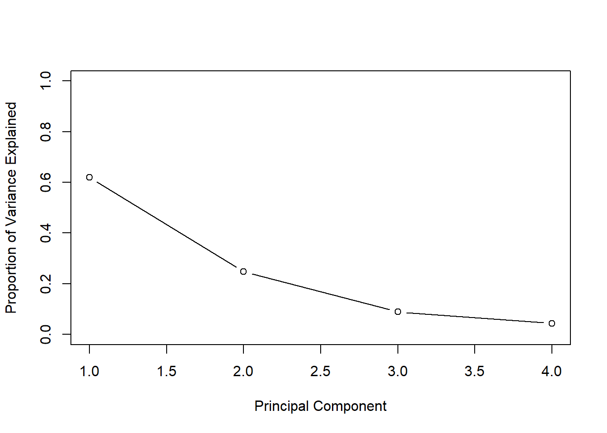

10. Clustering Lab
Objective
We are attempting to identify subgroups in the data, also known as clusters.
Dataset Background
In this lab, we use a simulated dataset. The data creation process is engineered to create a dichotomy in the data; this dichotomy manifests itself as a shift between the mean of the first half of the observations and the second. This is achieved by adding and subtracting a constant from each half of the dataset. We use the rnorm() function to generate data:
set.seed(2)
x <- matrix(rnorm(50*2), ncol=2)
x[1:25,1] <- x[1:25,1] +3
x[1:25,2] <- x[1:25,2] -43/4. Dataset Exploration, Variable Transformation
The lab does not feature any dataset exploration. However, for the sake of illustrating the existing divide between the two groups of data, here is a scatter plot:
plot(x)
There is no variable transformation applied for the first half of this lab, but for hierarchical clustering we will be using variable scaling later.
5. Running the kmeans() Function - K-Means Clustering
We now perform K-means clustering with K=2, which means that we attempt to divide the dataset in 2 distinct, non-overlapping groups, or clusters. For this we use the kmeans() function:
km.out <- kmeans(x,2,nstart=20)Examining the output of the function:
(names(km.out))## [1] "cluster" "centers" "totss" "withinss"
## [5] "tot.withinss" "betweenss" "size" "iter"
## [9] "ifault"One of the important output elements is “cluster”, which contains the group assignments for each data point:
(km.out$cluster) ## [1] 1 1 1 1 1 1 1 1 1 1 1 1 1 1 1 1 1 1 1 1 1 1 1 1 1 2 2 2 2 2 2 2 2 2 2
## [36] 2 2 2 2 2 2 2 2 2 2 2 2 2 2 2We can also plot the same scatter plot as earlier, except this time we color the data points according to their cluster assignment: plot(x,col=(km.out$cluster+1),main=“K-Means Clustering Results with K=2”,xlab="“,ylab=”",pch=20,cex=2) We can see that the function divides the data in two clearly separated groups.
Here we chose K = 2 because we were previously aware that there were two groups in the data we created. However with an unknown dataset, we do not know how many groups to expect. If we had tried to split the data in 3 groups:
set.seed(4)
km.out <- kmeans(x,3,nstart=20)
(km.out)## K-means clustering with 3 clusters of sizes 17, 23, 10
##
## Cluster means:
## [,1] [,2]
## 1 3.7789567 -4.56200798
## 2 -0.3820397 -0.08740753
## 3 2.3001545 -2.69622023
##
## Clustering vector:
## [1] 1 3 1 3 1 1 1 3 1 3 1 3 1 3 1 3 1 1 1 1 1 3 1 1 1 2 2 2 2 2 2 2 2 2 2
## [36] 2 2 2 2 2 2 2 2 3 2 3 2 2 2 2
##
## Within cluster sum of squares by cluster:
## [1] 25.74089 52.67700 19.56137
## (between_SS / total_SS = 79.3 %)
##
## Available components:
##
## [1] "cluster" "centers" "totss" "withinss"
## [5] "tot.withinss" "betweenss" "size" "iter"
## [9] "ifault"Notice the use of the nstart argument in the function above. nstart is used to start the clustering algorithm at multiple data points chosen at random, and to then only report the best result found. This method is meant to prevent the clustering algorithm from getting stuck in a local optimum. The clustering algorithm seeks to minimize the total sum of squares within clusters. This number can be accessed from the kmeans() output as an object called tot.withinss:
set.seed(3)
km.out <- kmeans(x,3,nstart=1)
(km.out$tot.withinss)## [1] 97.97927km.out <- kmeans(x,3,nstart=20)
(km.out$tot.withinss)## [1] 97.97927Here we see that both nstart values return the same total sum of squares within clusters. However, it is recommended to use a large nstart value to prevent getting stuck in the wrong optimum when using datasets that aren’t as clearly delimited as this one.
6 Running the hclust() Function - Hierarchical Clustering
The first thing we will need to work with hierarchical clustering is an Euclidian distance matrix, which will provide the euclidian distance between all the 50 data points. This is necessary, since our way of measuring how dissimilar two data points are, and thus which category they belong to, is based on their relative Euclidian distance:
dist_matrix <- dist(x)Now we can use hclust() with that matrix as an argument:
hc.complete <- hclust(dist_matrix,method="complete") Note that the method = “complete” argument in the formula call refers to complete linkage method used to plot the hierarchical clustering dendrogram. We can also use the alternate methods of single & average linkage by setting:
hc.average <- hclust(dist_matrix, method="average")
hc.single <- hclust(dist_matrix,method="single")We can now plot the dendrograms for all 3 methods using those outputs:
par(mfrow=c(1,3))
plot(hc.complete, main="Complete Linkage", xlab="", sub="", cex=0.9)
plot(hc.average, main="Average Linkage", xlab="", sub="", cex=0.9)
plot(hc.single, main="Single Linkage", xlab="", sub ="", cex=0.9)
And from the hclust() outputs form before, we can obtain the clustering labels per observation associated with a given cut of the dendrogram by using the cutree() function. We give the function the 2 in the second argument to specify we want 2 clusters:
cutree(hc.complete,2)## [1] 1 1 1 1 1 1 1 1 1 1 1 1 1 1 1 1 1 1 1 1 1 1 1 1 1 2 2 2 2 2 2 2 2 2 2
## [36] 2 2 2 2 2 2 2 2 2 2 2 2 2 2 2cutree(hc.average,2)## [1] 1 1 1 1 1 1 1 1 1 1 1 1 1 1 1 1 1 1 1 1 1 1 1 1 1 2 2 2 2 2 2 2 1 2 2
## [36] 2 2 2 2 2 2 2 2 1 2 1 2 2 2 2cutree(hc.single,2)## [1] 1 1 1 1 1 1 1 1 1 1 1 1 1 1 1 2 1 1 1 1 1 1 1 1 1 1 1 1 1 1 1 1 1 1 1
## [36] 1 1 1 1 1 1 1 1 1 1 1 1 1 1 1We see that the complete & average linkage methods do a good enough job at separating the data, but the single linkage method performs poorly.
When specifying 4 clusters, the split is more spread out between the 1st and 3rd cluster, but we still get only two observations falling into the 2nd and 4th categories, respectively. cutree(hc.single,4)
cutree(hc.single,4)## [1] 1 1 1 1 1 1 1 1 1 1 1 1 1 1 1 2 1 1 1 1 1 1 1 1 1 3 3 3 3 3 3 3 3 3 3
## [36] 3 3 3 3 3 3 4 3 3 3 3 3 3 3 3Additional notes - scaling & as.dist()
Variable Scaling - it might be necessary to scale variables before performing hierarchical clustering.
xsc <- scale(x)
plot(hclust(dist(xsc),method="complete"),main="Hierarchical Clustering with Scaled Features")
Using the as.dist() function: as.dist() can be used to compute correlation-based distance, and allows to go from a square symmetric matrix to a distance matrix. This matrix can then be passed to the hclust() function:
x <- matrix (rnorm (30*3) , ncol =3)
dd=as.dist(1- cor(t(x)))
plot(hclust(dd,method="complete"),
main=" Complete Linkage with Correlation -Based Distance",xlab="", sub ="")